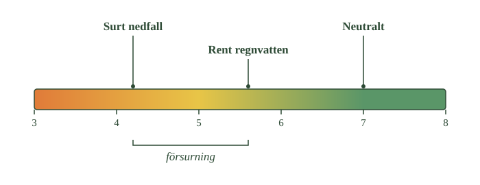
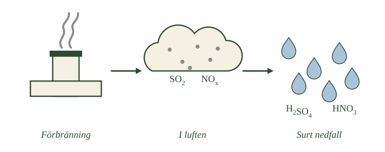
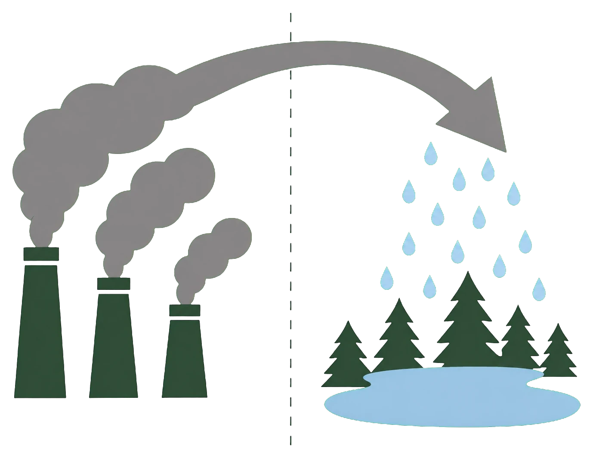

- Rent regnvatten är inte neutralt — det har pH omkring 5,6
- Det beror på luftens koldioxid, som bildar kolsyra i regndroppen
- Kolsyra är en svag syra
- Försurning betyder att nedfallet blivit surare än naturligt
- Allt surt regn är alltså inte förorening
Innan vi tittar på vad försurning är måste vi reda ut en sak som många har fel om.
Regn är alltid lite surt
Det verkar rimligt att rent regnvatten skulle ha pH 7. Det är ju bara vatten som fallit från himlen.
Men så är det inte. Rent regnvatten är naturligt surt, med pH omkring 5,6.
Anledningen känner du redan till från syrorna. Luften innehåller koldioxid, och när regndroppar bildas löser sig en del av koldioxiden i dem. Då bildas kolsyra — samma sak som i en läsk.
Kolsyra är en svag syra, så bara en liten del av molekylerna avger sina vätejoner. Men det räcker för att sänka pH under 7.
Varför det spelar roll
Det här är viktigt att ha klart för sig, annars blir resten av delkapitlet missvisande.
Försurning betyder inte att regnet är surt. Det har det alltid varit.
Försurning betyder att regnet blivit surare än det naturligt är — att människan tillfört så mycket försurande ämnen att naturen inte hinner ta hand om dem.
Skillnaden mellan pH 5,6 och pH 4,2 låter liten. Men som du vet är varje steg på skalan tio gånger, så det är ungefär tjugofem gånger fler vätejoner.
- Var på skalan rent regnvatten ligger
- Hur långt därifrån neutralt ligger
- Åt vilket håll surt nedfall ligger jämfört med rent regn
- Vad klammern under skalan spänner över

Naturliga variationer
En sista sak. Även naturlig nederbörd varierar en del i pH.
Luften innehåller inte bara koldioxid utan också havssalt, damm och olika ämnen från växter. Beroende på var man mäter kan naturligt regn därför ha både något högre och något lägre pH än 5,6.
Talet 5,6 är en utgångspunkt, inte en exakt gräns.
- Har rent regnvatten pH 7?
- Vad gör regnvattnet surt?
- Vilket pH har rent regn?
- Varför varierar naturlig nederbörd?
- Vad betyder försurning då?
Rent regnvatten är inte neutralt
Det är lätt att tänka att rent regnvatten borde ha pH 7 och alltså vara neutralt. Så är det inte. Redan naturligt regnvatten är vanligtvis svagt surt.
Luftens koldioxid bildar kolsyra
I atmosfären finns koldioxid, \(\ce{CO2}\). När regndroppar bildas löser sig en del av luftens koldioxid i vattnet. Koldioxiden reagerar då med vatten och bildar kolsyra:
Kolsyra är en svag syra. En liten del av kolsyramolekylerna avger vätejoner till vattenmolekyler, så att oxoniumjoner, \(\ce{H3O+}\), bildas. Därför får regnvattnet ett pH under 7.
Utgångspunkten är pH 5,6
Som kemisk utgångspunkt brukar man ange att rent regnvatten i jämvikt med luftens koldioxid har ett pH på ungefär 5,6.
I verkligheten kan naturlig nederbörd ha både högre och lägre pH eftersom luften också innehåller exempelvis havssalt, stoft och naturliga organiska ämnen.
Försurning betyder surare än naturligt
Det viktiga är därför inte att all nederbörd med ett pH under 7 skulle vara försurad. Försurning innebär att mark eller vatten blir surare än sitt naturliga tillstånd, exempelvis genom att människan tillför mer försurande ämnen än naturen hinner neutralisera.
Skillnaden mellan pH 5,6 och pH 4,2 låter liten, men eftersom varje steg är tio gånger motsvarar den ungefär tjugofem gånger fler vätejoner.
Varför just 5,6
Standardtexten anger 5,6 som utgångspunkt. Talet är inte valt utan uträknat, och det följer av hur mycket koldioxid som finns i luften.
Koldioxiden i atmosfären löser sig i regndroppen tills jämvikt nåtts. Hur mycket som löser sig beror på koldioxidhalten i luften. Den lösta koldioxiden bildar kolsyra, och kolsyran avger i sin tur vätejoner — men bara en liten del av dem, eftersom den är en svag syra.
Räknar man igenom kedjan, med atmosfärens koldioxidhalt som ingång, hamnar man på pH omkring 5,6.
Och talet förändras
Här blir det intressant, och lite oroande.
Atmosfärens koldioxidhalt är inte konstant. Den har stigit från omkring 280 miljondelar före industrialiseringen till över 420 idag.
Mer koldioxid i luften betyder mer kolsyra i regndroppen, och därmed lägre pH. Det förindustriella regnet var alltså något mindre surt än dagens "rena" regn.
Effekten är liten jämfört med svavel- och kväveutsläppen, och i praktiken används 5,6 fortfarande som referens. Men den illustrerar något viktigt: det vi kallar naturligt är i sig en produkt av vilken tid vi lever i.
Havet gör samma sak, i stor skala
Samma kemi sker i haven, och där är effekten betydande.
Havet tar upp en stor del av den koldioxid människan släpper ut. Koldioxiden bildar kolsyra, kolsyran avger vätejoner, och havets pH sjunker. Det kallas havsförsurning.
Det är ett annat problem än det här delkapitlet handlar om — orsaken är koldioxid, inte svavel och kväve — men kemin är densamma. Och den drabbar organismer som bygger skal av kalciumkarbonat, eftersom kalk löses av syra.
Om modellen: standardtexten ger 5,6 som ett fast värde. Det är en referenspunkt, inte en konstant — och sambandet mellan koldioxid och surhet är samma i en regndroppe som i ett hav.
- Svaveldioxid bildas när svavelhaltiga bränslen förbränns
- Kväveoxider bildas av luftens eget kväve vid höga temperaturer
- Båda blir syror när de reagerar i atmosfären
- Svaveldioxid ger svavelsyra, kväveoxider ger salpetersyra
- Även ammoniak från jordbruket kan bidra
Nu till orsakerna. Två ämnesgrupper står för det mesta av försurningen, och båda kommer från förbränning.
Svaveldioxid
Kol och olja innehåller svavel — inte som tillsats utan naturligt, från det organiska material bränslet en gång bildades av.
När bränslet förbränns reagerar svavlet med syre och bildar svaveldioxid. Den stiger upp med rökgaserna.
Uppe i atmosfären reagerar svaveldioxiden vidare med syre och vatten. Till slut har den blivit svavelsyra — en av de starka syror du mötte tidigare.
Kväveoxider
Kväveoxiderna bildas på ett helt annat sätt, och det är det överraskande med dem.
De kommer inte från bränslet. De kommer från luften själv.
Luften består till nästan fyra femtedelar av kvävgas. Som du vet från repetitionen är kvävgas mycket trög att få att reagera, eftersom de två kväveatomerna hålls samman av en trippelbindning — den starkaste bindningen mellan två atomer.
Men i en motor eller en kraftverkspanna blir det extremt varmt. Vid tillräckligt höga temperaturer räcker energin för att bryta även trippelbindningen, och kvävet börjar reagera med syre.
Då bildas kväveoxider, som i atmosfären kan omvandlas vidare till salpetersyra.
Det är alltså samma sega bindning som gör konstgödsel svårt att tillverka som här bryts av misstag, bara för att det är tillräckligt hett.
- Vad som finns i det första steget
- Vad som står skrivet i molnet i det andra steget
- Vad som står på regndropparna i det tredje
- Åt vilket håll förloppet går

Och ammoniak
Ett tredje ämne bidrar också, om än mindre.
Ammoniak kommer framför allt från jordbruket — från gödsel och djurhållning. När ammoniak omvandlas i mark och vatten kan processerna bidra till försurning.
I det här delkapitlet ligger tyngdpunkten ändå på svavel och kväve, eftersom det var de som orsakade det stora problemet under 1900-talet.
- Vilka två ämnesgrupper orsakade försurningen?
- Var kommer svavlet ifrån?
- Var kommer kvävet ifrån?
- Varför krävs höga temperaturer för kväveoxider?
- Vilket tredje ämne bidrar också?
Svaveldioxid och kväveoxider är huvudorsakerna
Den kraftiga försurning som drabbade stora delar av Europa under 1900-talet orsakades framför allt av utsläpp av svaveldioxid och kväveoxider.
Svavlet finns i bränslet
Svaveldioxid, \(\ce{SO2}\), bildas när bränslen som innehåller svavel förbränns. Framför allt kol och olja kan innehålla svavel. När bränslet förbränns reagerar svavlet med syre och bildar svaveldioxid.
I atmosfären kan svaveldioxiden reagera vidare med syre, vatten och andra ämnen. Så småningom bildas bland annat svavelsyra, \(\ce{H2SO4}\), och sulfatpartiklar.
Kvävet kommer från luften
Kväveoxider fungerar annorlunda. Luften består till nästan fyra femtedelar av kvävgas, \(\ce{N2}\). Normalt är kvävgasen mycket reaktionströg eftersom de två kväveatomerna hålls ihop av en stark trippelbindning.
Hettan bryter trippelbindningen
Vid de mycket höga temperaturer som uppstår i exempelvis förbränningsmotorer och kraftverk kan ändå kväve och syre börja reagera med varandra.
Då bildas olika kväveoxider, framför allt kvävemonoxid, NO, och kvävedioxid, \(\ce{NO2}\). De brukar tillsammans betecknas \(\ce{NO_x}\).
I atmosfären kan kväveoxiderna reagera vidare och bland annat bilda salpetersyra, \(\ce{HNO3}\). När svavelsyra och salpetersyra når mark och vatten ökar mängden vätejoner och därmed försurningen.
Ammoniak från jordbruket bidrar också
Det finns även andra ämnen som kan bidra till försurning. Ett viktigt exempel är ammoniak, som framför allt kommer från jordbruket. När ammoniak omvandlas i mark och vatten kan processerna bidra till försurning.
I detta kapitel ligger dock tyngdpunkten på svaveldioxid och kväveoxider, eftersom de hade en central roll i det historiska problemet med surt nedfall i Sverige och övriga Europa.
Kvävets paradox
Standardtexten konstaterar att kvävgasens trippelbindning gör den reaktionströg, och att höga temperaturer ändå får den att reagera. Sätter man ihop det med baserna får man något som är värt att dröja vid.
I baserna läste du om Haber-Bosch-processen — sättet att tillverka ammoniak av luftens kväve. Den kräver hundratals graders värme, hundratals atmosfärers tryck och en katalysator. Den står för ett par procent av världens energianvändning. Allt för att bryta en enda bindning.
Här bryts samma bindning av misstag, i varje bilmotor, som en biprodukt av att det råkar bli tillräckligt varmt.
Samma trippelbindning, samma energitröskel — men i det ena fallet är målet att bryta den och i det andra är det en olycka.
Varför just förbränningsmotorer
Temperaturen är nyckeln, och den måste vara riktigt hög.
Kvävgas och syre finns tillsammans i luften överallt, hela tiden, utan att reagera. Vid rumstemperatur händer ingenting.
Men i en förbränningsmotor når temperaturen över 2000 grader i det ögonblick bränslet antänds. Då räcker energin, och en liten andel av kvävet och syret reagerar.
Det förklarar varför kväveoxider är så svåra att komma åt. Svavel kan man tvätta bort ur bränslet innan det förbränns — men kvävet kommer från luften som motorn andas, och den kan man inte rena i förväg. Reningen måste ske efteråt, i katalysatorn.
Vad "\(\ce{NO_x}\)" står för
Beteckningen \(\ce{NO_x}\) är ovanlig och värd en förklaring.
Det lilla x:et betyder att antalet syreatomer varierar. Vid förbränning bildas främst kvävemonoxid, NO, men den oxideras snabbt vidare till kvävedioxid, \(\ce{NO2}\), i luften.
Eftersom de två omvandlas till varandra hela tiden och har liknande effekter, mäter och reglerar man dem tillsammans under samlingsnamnet \(\ce{NO_x}\).
Om modellen: standardtexten beskriver två utsläppskällor som likvärdiga problem. Med trippelbindningen blir skillnaden tydlig — svavlet finns i bränslet och går att avlägsna, kvävet finns i luften och går inte.
- Vått nedfall är syror lösta i regn och snö
- Torrt nedfall är gaser och partiklar som faller ner direkt
- Luftföroreningar kan transporteras mycket långt
- Höga skorstenar spred problemet i stället för att lösa det
- Försurning är därför ett gränsöverskridande problem
Nu vet du varifrån de försurande ämnena kommer. Men hur når de marken?
Två vägar ner
Vått nedfall är det man oftast tänker på. De försurande ämnena löser sig i regn eller snö och följer med nederbörden ner.
Torrt nedfall är mindre uppenbart. Gaser och små partiklar kan fastna direkt på mark, växter, vatten och byggnader utan att någon nederbörd är inblandad. De blir sura först senare, när de kommer i kontakt med fukt.
Båda vägarna leder till samma sak: fler vätejoner i mark och vatten.
Vinden bryr sig inte om gränser
Här kommer det som gör försurningen till ett så speciellt problem.
Luftföroreningar stannar inte där de släpps ut. Vindarna för dem vidare, och ett utsläpp kan ge nedfall hundratals kilometer bort.
Det betyder att ett land kan drabbas av försurning utan att själv ha släppt ut särskilt mycket. Och precis så var det för Sverige. En stor del av det svavel som föll ner över svenska sjöar och skogar kom från andra länder.
Höga skorstenar gjorde det värre
Under 1900-talet byggdes industriskorstenar allt högre. Tanken var god: ju högre skorsten, desto mer späds röken ut innan den når marken, och desto renare blir luften runt fabriken.
Det fungerade — lokalt.
Men utsläppen försvann inte. De spreds bara över ett större område, och hamnade längre bort. Ett lokalt problem gjordes till ett gemensamt.
Därför krävs samarbete
Slutsatsen är obekväm men ofrånkomlig.
Ett land kan inte lösa försurningen på egen hand. Även om Sverige slutade släppa ut allt svavel skulle nedfallet fortsätta, eftersom det till stor del kommer utifrån.
- Var röken kommer ifrån
- Åt vilket håll pilen går
- Vad som ligger under pilens slut
- Vad den streckade linjen markerar

Försurning är ett gränsöverskridande miljöproblem, och det kräver att länder kommer överens. Hur det gick till får du läsa om i avsnitt 3.
- Vilka två sätt når de försurande ämnena marken på?
- Vad skiljer vått från torrt nedfall?
- Hur långt kan luftföroreningar transporteras?
- Vad hände när skorstenarna byggdes högre?
- Varför räcker inte nationella åtgärder?
Två vägar ner till marken
De försurande ämnena kan nå marken på två huvudsakliga sätt.
Vått nedfall följer med nederbörden
Vid vått nedfall finns de försurande ämnena lösta i regn, snö eller annan nederbörd. Regndropparna tar med sig exempelvis sulfat och nitrat från atmosfären och transporterar dem till marken.
Torrt nedfall blir surt först vid kontakt med fukt
Vid torrt nedfall fastnar gaser och små partiklar direkt på mark, vatten, växter och byggnader. När de senare kommer i kontakt med vatten kan de bidra till försurning.
Vindarna för dem hundratals kilometer
En viktig egenskap hos luftföroreningar är att de kan transporteras mycket långt. Vindarna bryr sig inte om nationsgränser. Ett utsläpp från en fabrik, ett kraftverk eller ett fartyg kan därför orsaka nedfall hundratals kilometer från utsläppskällan.
Höga skorstenar spred problemet
Under 1900-talet byggdes allt högre industriskorstenar. Det minskade koncentrationen av luftföroreningar i närheten av fabrikerna, men utsläppen försvann inte. De spreds i stället över större områden.
Sverige tog under lång tid emot stora mängder försurande ämnen som hade släppts ut i andra länder. Även i dag kommer en stor del av svavelnedfallet över Sverige från utländska källor och internationell sjöfart.
Därför krävs samarbete mellan länder
Försurning är därför ett gränsöverskridande miljöproblem. Det går inte att lösa genom att ett enda land minskar sina utsläpp.
Hur man vet varifrån nedfallet kommer
Standardtexten säger att en stor del av svavelnedfallet över Sverige kommer utifrån. Det är ett påstående som kräver bevis — hur kan man veta var en molekyl kommer ifrån?
Tre metoder används tillsammans.
Spridningsmodeller beräknar hur luftmassor rör sig. Man vet var utsläppen sker, man mäter vindar och nederbörd, och man räknar ut var ämnena bör hamna. Modellerna kontrolleras sedan mot verkliga mätningar.
Bakåttrajektorier går andra vägen. När man mäter högt nedfall en viss dag kan man räkna baklänges i vinddata och se var luften kom ifrån de senaste dagarna.
Isotopsammansättning är den mest direkta. Svavel från olika källor har något olika andelar av sina isotoper — och isotoper mötte du i repetitionens första avsnitt. Genom att mäta förhållandet kan man ibland avgöra om svavlet kommer från kolförbränning, från olja eller från naturliga källor som vulkaner.
Sjöfarten är kvar
En detalj som förklarar varför problemet inte försvunnit helt.
Landbaserade utsläpp har reglerats hårt i Europa. Men fartygsbränsle har länge varit undantaget, och tjockolja till fartyg innehåller betydligt mer svavel än bränslen på land.
Regler har införts stegvis. Östersjön och Nordsjön är sedan flera år särskilda kontrollområden med låga svavelgränser, och sedan 2020 gäller strängare krav globalt.
Men internationell sjöfart lyder under internationella regler, inte nationella — vilket illustrerar precis den poäng standardtexten gör om gränsöverskridande problem.
Om modellen: standardtexten konstaterar att nedfallet kommer utifrån. Att man faktiskt kan mäta det, och hur, gör påståendet till något annat än en gissning.
Laddar övningskort…
Laddar frågor ...